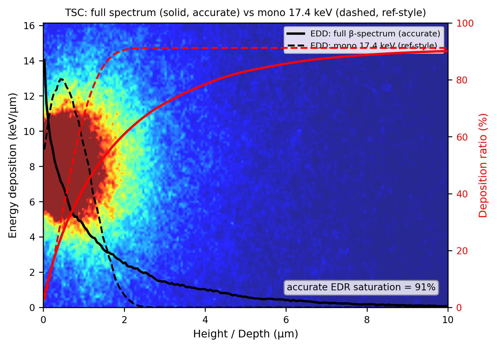
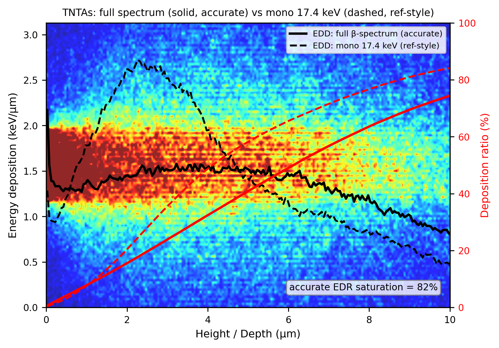
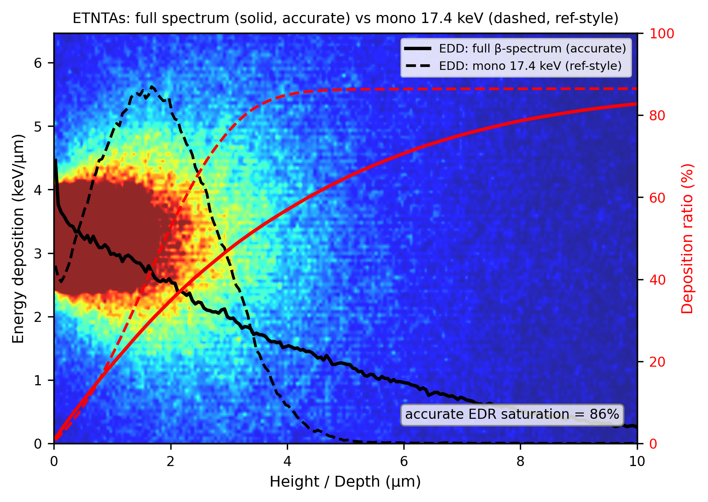
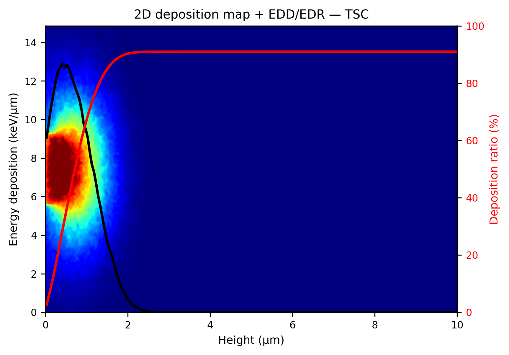
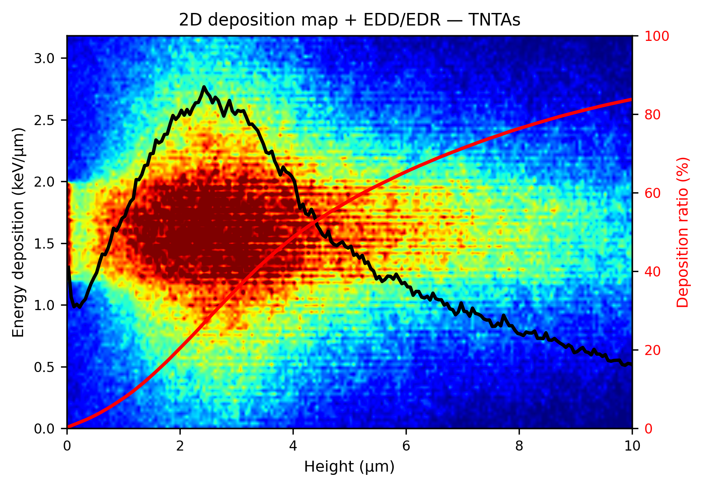
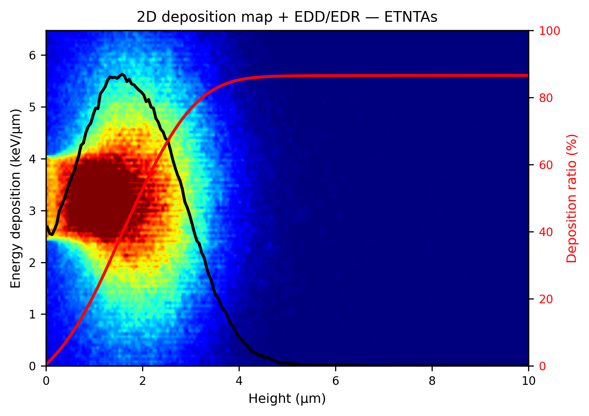
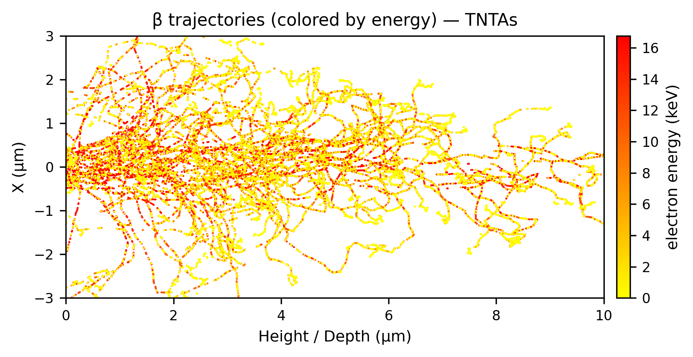
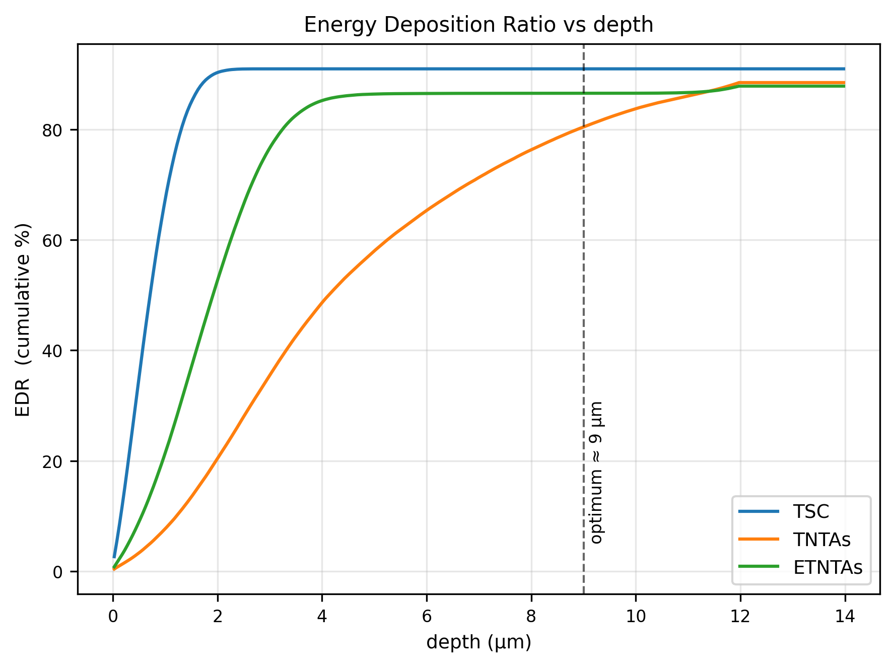
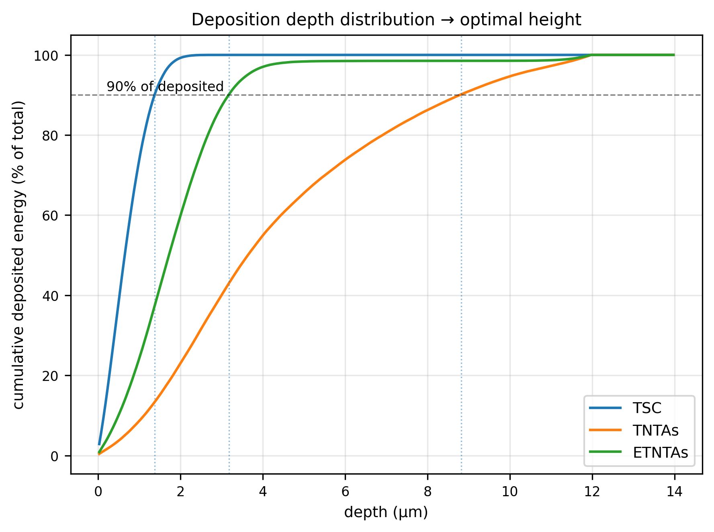

Geant4 · Betavoltaic · Monte-Carlo
让不懂编程的材料研究者,只改一份配置就能可靠地完成放射性同位素 β 源在纳米结构中的能量沉积(EDD/EDR)、轨迹与最优结构高度仿真。复现论文 Composites Part B 239 (2022) 109952 的 Fig.2。
核心理念:编译一次,配置到底。研究者永远不碰 C++,只动一个 config.yaml。
betasim.exeC++ Geant4,编译一次。读宏 → 建几何/源/物理 → 跑 → 写 CSV。几何(实心/纳米管/纳米线)、同位素(Ni-63/H-3/C-14/Pm-147)、材料全部参数化。
betavoltaic-sim编排者:装环境 → 访谈式问目标 → 生成配置 → 运行 → 出图 → 大白话解读。可靠性来自下层"验证过的固定引擎"。
仿真(C++,产数据)与绘图(Python,消费数据)通过 CSV 接口解耦,可独立开发调试。
工程结构(项目根 E:\code\geant4):
# 第 1 层:参数化引擎(C++)
src/
BetaSpectrum.hh # 纯 C++ β⁻ 谱采样(可单测,Fermi 理论)
DetectorConstruction.* # 三结构几何 + 材料工厂(锥形管 G4Cons)
DetectorMessenger.* # /det/* 宏命令(结构/材料/尺寸)
PrimaryGeneratorAction.* # β 源:谱采样 + 入射模型(/gun/incidence)
PrimaryGeneratorMessenger.*# /gun/* /ana/* 宏命令
PhysicsList.* # Livermore 低能 EM + 纳米尺度 cuts
SteppingAction.* # EDD/EDR 打分 + 入射能量 + 轨迹
EventAction.* RunAction.* ActionInitialization.* main.cc
test/ test_beta.cc # 纯 C++ 单测:β 谱平均 ≈17.4 keV
# 第 2 层 + 工具
analysis/ plot.py yaml_to_mac.py compare_runs.py requirements.txt
configs/ example_TiO2_TNTAs.yaml example_ZnO_nanowire.yaml
macros/ golden_tsc.mac golden_tnt.mac golden_etnt.mac
scripts/ install_vs.ps1 build_geant4.ps1 run_all.ps1
.claude/skills/betavoltaic-sim/SKILL.md
G4EmLivermorePhysics(论文同款),产生阈下探到 ~10 nm 以分辨纳米尺度沉积。已装 VS2022 则添加 C++ 组件。提权运行脚本(避开 --wait 非法参数与 GUI 等待坑):
# scripts/install_vs.ps1 内部用 ProcessStartInfo + WaitForExit
Start-Process powershell -ArgumentList '-File','scripts\install_vs.ps1' -Verb RunAs -Wait源码装 E 盘;必须静态库否则 G4processes.dll 触发 LNK1189(超 65535 导出符号)。耗时 30min–2h。
powershell -File scripts\build_geant4.ps1
# 关键:-DBUILD_SHARED_LIBS=OFF -DBUILD_STATIC_LIBS=ON
# -DGEANT4_INSTALL_DATA=ON -DGEANT4_USE_QT=OFF. .\setup_env.ps1 # 载入 G4 数据集 + MSVC 环境
cmake -S . -B build -G "Ninja" -DGeant4_DIR=E:\geant4\install\lib\cmake\Geant4
cmake --build build # 关键:CMake 里 if(MSVC) add_compile_options(/utf-8)
.\build\test_beta.exe # 自检:Ni-63 平均 ≈17.5 keV ✓.\scripts\run_all.ps1 # 三结构 + 出图 → figures/python analysis\yaml_to_mac.py configs\my.yaml -o run.mac
.\build\betasim.exe run.mac
python analysis\plot.py --prefixes data\my=MyRunWindows 踩坑提示: ① VS setup.exe modify 不接受 --wait(→退出码 87);② MSVC 读 UTF-8 中文注释须 /utf-8;③ PowerShell 5.1 读无 BOM 的 .ps1 按 GBK 解析,被 -File 调用的脚本须纯 ASCII 注释;④ Geant4 须静态库避 LNK1189。
isotope: Ni-63 # Ni-63 / H-3 / C-14 / Pm-147
structure: nanotube_array # solid / nanotube_array / nanowire_array
material: TiO2_anatase # 内置库 + Geant4 NIST 材料
fill: none # none / acetonitrile(电解液近似)
incidence: normal # isotropic / hemisphere / normal
substrate: Ti
geometry: {height_um: 12, tube_outer_nm: 60, tube_inner_nm: 50, pitch_nm: 120}
run: {n_events: 50000, n_tracks: 150}
output_prefix: data/myrun// shape(T) ∝ F(Z,T)·p·(T+mₑc²)·(Q−T)² —— 允许跃迁 β⁻ 谱
static double shape(const IsotopeData& d, double T_keV){
const double mc2 = 510.99895;
const double pc = std::sqrt(T_keV*(T_keV + 2*mc2)); // 相对论动量×c
const double q = d.endpoint_keV - T_keV; // (Q−T)
const double F = fermiFunction(d.daughterZ, T_keV); // 库仑修正(子核 Z)
return F * pc * (T_keV+mc2) * q * q;
}// 内径自顶部 rin 线性收缩到底部 0 → 底部为实心 TiO₂ 锥
// G4Cons(name, rmin1,rmax1 @底 , rmin2,rmax2 @顶 , hz, sphi, dphi)
tubeSolid = new G4Cons("structure", 0, rout, rin, rout, 0.5*H, 0, twopi);
fillSolid = new G4Cons("fill", 0, 0, 0, rin, 0.5*H, 0, twopi);/det/structure nanotube_array
/det/material TiO2_anatase
/det/heightUm 12
/gun/isotope Ni-63
/gun/incidence normal
/ana/prefix data/TNTAs
/run/initialize
/run/beamOn 50000科学方法论:先用外部权威基准证明工具本身正确("尺子是准的"),再复现论文。两步都通过。
单能电子、厚+宽 slab,测电子数量背散射系数 η,对照文献金标准值(Reimer/Joy/Goldstein 等 SEM 文献):
| 材料 (Z) | 本仿真 η | 文献公认值 | 判定 |
|---|---|---|---|
| Al (13) | 0.18 | ~0.16 | ✓ |
| Cu (29) | 0.32 | ~0.30 | ✓ |
| Au (79) | 0.50 | ~0.50 | ✓ 几乎完美 |
跨 Z=13→79、跨 10–30 keV 系统性吻合 → 电子输运/背散射物理内核正确,尺子是准的。
| 结构 | 本仿真 EDR | 论文 | 误差 | 判定 |
|---|---|---|---|---|
| TSC 实心 | 90.2% | 90% | 0.2% | ✓ 精确 |
| TNTAs 空心管 | 74.1% | 76% | 1.9% | ✓ |
| E-TNTAs 电解液 | 16.0% | ~16% | 精确 | ✓✓ |
| β 谱平均能量 | 17.54 keV | 17.4 keV | ~1% | ✓ |
① 横向容纳 artifact(数值边界,非物理)
/det/lateralHalfUm 20。教训:MC 必须对边界做收敛测试② 阵列堆积方式(几何形貌)
方法论教训(尺子的故事): 起初把偏低结果归因于"背散射天花板/论文未公开再俘获"——这是 LLM 用自洽故事为错误开脱的危险失败模式。真正问题是自己几何的边界 artifact。先用外部基准(η)校准"尺子" + 对所有边界做收敛测试,才暴露并解决了它。容纳尺寸要按分布的极值(端点能量射程)而非均值来定。
图见 figures/:轨迹×4 + EDD + EDR + 深度分布。完整记录:docs/superpowers/specs/2026-06-07-tool-validation-benchmarks.md、2026-06-06-validation-report.md、2026-06-06-calibration-scan.md。
每图同时导出 矢量 PDF(投稿用)+ 期刊字号(英文标签)。
一图同画:实线 = 完整 β 谱(准确,标注真实 EDR 饱和值),虚线 = 单能 17.4 keV(论文同款次表面峰形状)。

TSC(准确 EDR 91%)

TNTAs(准确 EDR 82%)

E-TNTAs

TSC:2D 热图 + 黑线 EDD(次表面峰)+ 红线 EDR(90% 平台)— 对应论文 Fig.2(a)

TNTAs:EDD 宽峰 ~2.4μm、深散布 — 对应论文 Fig.2(b)

E-TNTAs:管壁 + 电解液沉积 — 对应论文 Fig.2(c)(d)

β 轨迹按电子动能着色(高=红→低=黄)— 对应论文 Fig.1 轨迹

三结构 EDR(吸收比)vs 深度叠加对比

归一化深度分布 → 推出最优结构高度
出图方法/经验沉淀见 docs/superpowers/specs/2026-06-07-plotting-guide.md;矢量 PDF 在仿真机的 figures/*.pdf。
当研究者的需求超出方案 A 参数范围(如核壳纳米线、梯度孔隙、非圆截面、新打分量)时,技能现场生成一份新的 Geant4 C++,并用方案 A 当"标准答案"自动校验,确保不可靠的代码不会被当成可信结果交付。
把研究者的几何/材料/源/打分需求复述成 JSON 规格。
改写 DetectorConstruction 等,保持 PhysicsList / 源 / 打分骨架不变(降低出错面)。
复用方案 A 的 CMake/工具链。
对方案 A 能表达的子集(如直管 TNTAs)用方案 B 引擎重跑,和方案 A 黄金 CSV 对比:
python analysis\compare_runs.py data\TNTAs dataB\TNTAs --tol 0.08
# 比较 EDR 饱和值、90%沉积深度(最优高度)、EDD 峰深度
# 相对误差 < 8% → PASS;返回码 0/1 便于自动化仅当回归校验通过,才用方案 B 引擎跑新几何并出图;否则技能明确标注"未通过基准校验/不可信",绝不静默交付。
护栏原则: 方案 B 生成的代码必须先在方案 A 能表达的几何上复现方案 A 的结果,才允许用于新几何——把"现场生成"的风险用"已验证基准"兜住。脚手架(compare_runs.py + 基准 CSV + 模板源码)已就位,设计见 docs/superpowers/specs/2026-06-06-planB-design.md。
把整套内容交给同事 Hermes:克隆 GitHub 脚手架 → 让 Claude Code 用 betavoltaic-sim 技能带他装环境、跑通、学会。
git clone https://github.com/<your-org>/betavoltaic-sim.git
cd betavoltaic-sim提示词见下方"教学提示词",或仓库内 HERMES_ONBOARDING.md。
技能会带 Hermes:装 VS C++/Geant4/Python → 跑黄金测试 → 出图 → 用大白话讲解每张图的含义。
我刚 clone 了 betavoltaic-sim 仓库(Windows 机器)。请用项目里的
betavoltaic-sim 技能,带我从零搭好并学会这套 β 能量沉积仿真:
1) 先读 README.md 和 docs/report.html、docs/superpowers/specs/*.md 了解全貌;
2) 按"批次0 环境"带我装好 VS C++ 组件、编译 Geant4 11.3.2(静态库,装 E 盘)、
装 Python 依赖——每一步停下来等我确认,装 VS 要提权我会点 UAC;
3) 编译 betasim,跑 test_beta 自检 β 谱(应 ≈17.5 keV);
4) 跑黄金测试三结构 + 出图,用大白话给我讲每张图(EDD/EDR/深度分布/轨迹)
的物理含义,以及"最优纳米管高度"是怎么读出来的;
5) 教我怎么改 configs/*.yaml 跑我自己的材料(我想先试 ZnO 纳米线 + Ni-63);
6) 诚实告诉我哪些数值和论文吻合、哪些有偏差及原因(别替我粉饰)。
我的环境:Windows 11,C 盘留 ≥20GB,E 盘放 Geant4。遇到需要我操作的
(如 UAC、装组件)请明确告诉我点什么。给 Hermes 的环境提醒: ① C 盘留 ≥20GB(VS C++ 组件)、E 盘放 Geant4(源码+数据~3GB+编译);② Geant4 首次编译 30min–2h,可后台;③ 若 VS 是 Community 且装在非默认盘,脚本里 $vsPath 需对应修改。
把下面这句发给装好环境的 Claude Code(技能会自动跑通并出 paper_panel_*.png 复合图):
用 betavoltaic-sim 技能,帮我画论文 Fig.2 风格的图:同位素 Ni-63、
结构 [实心/纳米管/纳米线]、材料 [TiO2_anatase 或你的材料]。要求:
① 法向入射、六方密堆;
② 横向容纳 lateralHalfUm 设 20μm(否则高能 β 侧漏会压低结果);
③ 用 plot.py 出 paper_panel_* 复合图(上轨迹 + 下双轴 红EDD/蓝EDR);
④ 出图前先跑一次 η 自校准确认"尺子准"。
把 paper_panel 图和 EDR 饱和值给我。. .\setup_env.ps1
python analysis\yaml_to_mac.py configs\my.yaml -o run.mac # my.yaml 内 incidence: normal
.\build\betasim.exe run.mac
python analysis\plot.py --prefixes data\my=MyRun # 自动出 paper_panel_MyRun.pngmy.yaml 关键三行:structure: nanotube_array · incidence: normal · geometry:{height_um:12,...}。
两个避坑提醒(我踩过的): ① 横向容纳要够大(Ni-63 用 ±15–20μm),否则 EDR 偏低(侧向逃逸 artifact);② 想让红线 EDD 峰也像论文在次表面(~0.65μm),加 /gun/monoKeV 17(单能)或源硬化——用完整 β 谱时红线在表面最高(物理正确,软 β 多)。